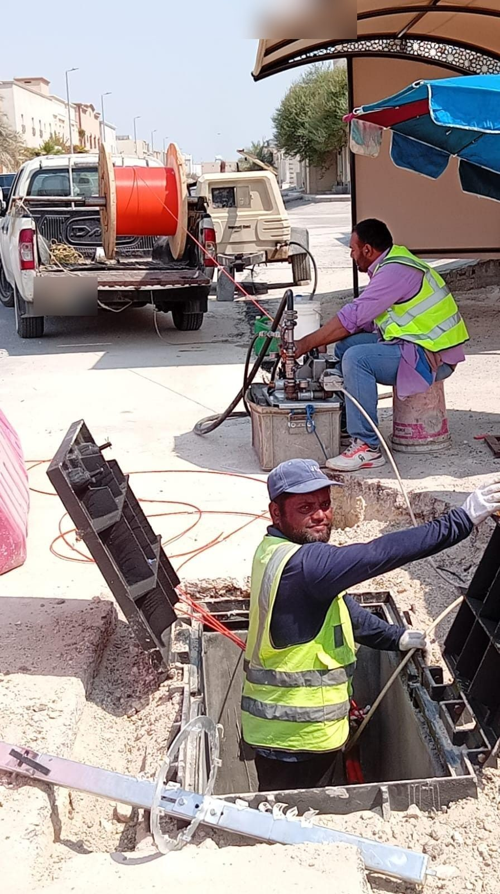
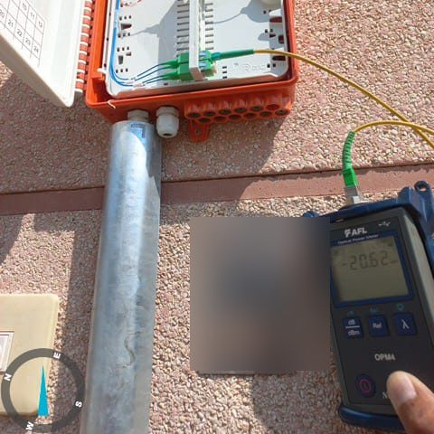
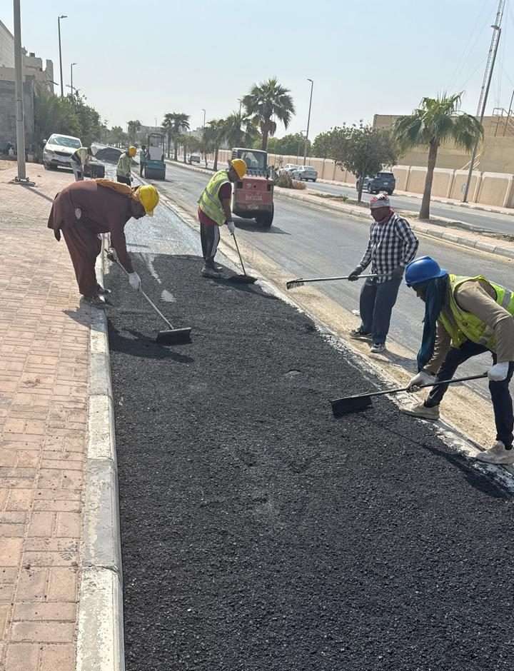

ما الذي يمكنني مساعدتك على تسليمه؟
خطا خدمة يغطّيان التسليم التقني للاتصالات وضبط المشاريع والبرامج.
هندسة شبكات الاتصالات وFTTH
التصميم والتخطيط والتسليم التقني لبيئات شبكات FTTH / FTTx وOSP / ISP.
أدعم مالكي الشبكات وفرق التنفيذ عبر سلسلة الهندسة كاملة — من استراتيجية الشبكة وتخطيط المسارات إلى التوثيق والمراجعة ودعم النشر.
الهدف هو شبكة مصممة بشكل صحيح على الورق، قابلة للبناء في الميدان، وموثقة بما يكفي للتشغيل.
تصميم شبكات FTTH / FTTx
البنية والطوبولوجيا وهرمية المقسمات وتخطيط السعة لشبكات الوصول.
تخطيط OSP / ISP
مسارات الشبكة الخارجية والأنابيب والأعمال المدنية، بالإضافة إلى كابلات المباني والمعدات.
تخطيط مسارات الألياف
تحسين المسارات وخطط الربط وتصميم نقاط التوزيع بالتنسيق مع التراخيص.
التوثيق التقني
HLD / LLD ورسومات As-built وmethod statements وتوثيق التسليم.
مراجعة وتحسين الشبكات
مراجعة التصاميم وفحوص الجودة وتحسين الشبكات المخططة أو القائمة.
دعم النشر
التنسيق الميداني ومواءمة المقاولين والإشراف على التركيب ودعم التشغيل.



إدارة المشاريع والبرامج
إحكام السيطرة على برامج الاتصالات والبنية التحتية المعقدة — ثلاث قدرات، نظام واحد.
الضوابط تمنع الانحراف، والحوكمة تديمه، والاسترداد يصحّحه. معاً يشكّلون نظام إدارة واحداً — لا ثلاث خدمات منفصلة.
يمكن أن يغطي التعاون الثلاثة جميعها، أو يركّز على القدرة التي يحتاجها برنامجك الآن.
التحكم بالمشاريع
الجدولة والتكلفة والتقدم تُقاس بشكل مختلف من كل طرف.
إطار ضبط متكامل يربط الخطة بالفعليات والمخاطر والتنبؤ.
- جداول مرجعية
- تقارير EVM والتكلفة
- سجلات المخاطر
- لوحات KPI
PMO وحوكمة البرامج
تقارير مجزأة ومساءلة غير واضحة عبر المشاريع.
نظام حوكمة بدورات مراجعة واضحة ومؤشرات أداء ومسارات تصعيد.
- إطار PMO
- مجالس الحوكمة
- التقارير التنفيذية
- سجلات القرارات
استرداد البرامج
برنامج متأخر عن الجدول دون مسار استرداد موثوق.
تخطيط استرداد قائم على التشخيص بأهداف واقعية ومراقبة.
- تحليل الأسباب الجذرية
- خطة الاسترداد
- إجراءات تصحيحية
- تتبع الاسترداد
الاتصالات والبنية التحتية الرقمية
معرفة قطاعية عميقة تدعم خطي الخدمة معاً.
مسار تعاون واضح
تقييم
فهم الوضع التقني أو البرنامجي الحالي.
تشخيص
تحديد الفجوات الهندسية أو الضبطية أو الحوكمة.
تصميم
تطوير الإطار التقني أو الإداري المطلوب.
تنفيذ
تشغيل النهج المتفق عليه مع الفريق.
متابعة
تتبع التقدم ودعم القرارات حتى الاستقرار.
أي خط خدمة يناسب حاجتك الحالية؟
لنناقش ما إذا كنت تحتاج إلى تسليم تقني ميداني، أو إدارة مشاريع وبرامج — أو كليهما معاً.
ناقش مشروعك